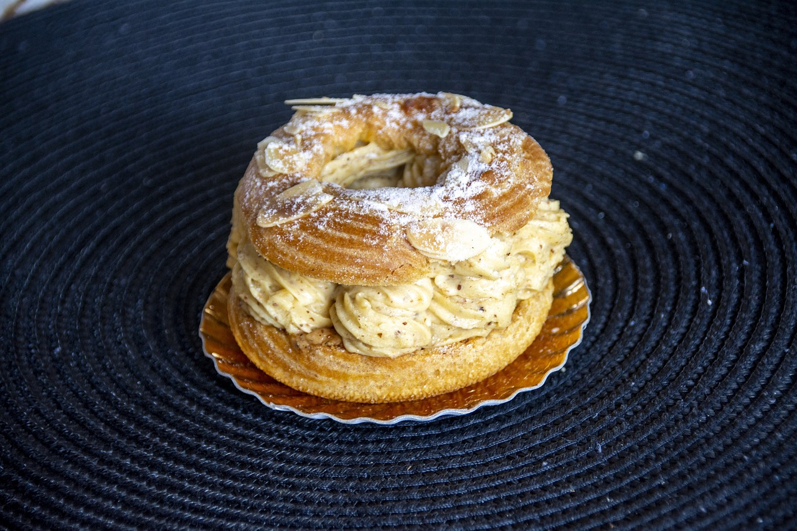

La tarte Tatin :alors qu’elles préparaient une tarte aux pommes dans leur restaurant de Lamotte-Beuvron en Sologne, les sœurs Caroline et Stéphanie Tatin l’oublient dans le four et la font brûler. Elles décident de garder les pommes caramélisées et de rajouter de la pâte sur le dessus… La tarte Tatin était née !
La religieuse : elle a été inventée en 1855 par Frascati, célèbre pâtissier-glacier parisien. Elle avait à l'époque une forme différente : un carré de pâte à choux fourré de crème pâtissière et surmonté de crème fouettée.
Le Paris-Brest : en hommage à la course cycliste Paris-Brest de 1905, ce gâteau à base de crème au beurre, de praliné et de pâte à choux prend la forme d’une roue de vélo.
L’éclair : s’il connaît ses balbutiements au XVIe siècle du temps où Catherine de Médicis, duchesse de Bretagne, voulait impressionner ses sujets en invitant notamment de fameux cuisiniers, celui que l’on nommait alors « pain à la duchesse » n’adopte sa forme allongée que sous les doigts du pâtissier des rois, Antonin Carême, au XIXe siècle. Une pâte à choux allongée garnie selon l’envie, dont le dessus est glacé de sucre fondant. Une pâtisserie qu’on ne peut déguster qu’en un éclair !
Le mille-feuille : Inventé, semble-t-il, dès le XVIIe siècle, le mille-feuille ne connaît un vrai succès qu’en 1867. C’est, en effet, la recette de la pâtisserie d’Adolphe Seugnot qui crée l’événement. L’association de pâte feuilletée et de crème pâtissière séduit les Parisiens qui se pressent alors devant sa boutique. Mais, au fait, combien de feuilles a le mille-feuille ? 729 dans la recette classique, mais parfois jusqu’à 2 000, toujours réparties en trois étages, en alternance avec une couche de crème.
